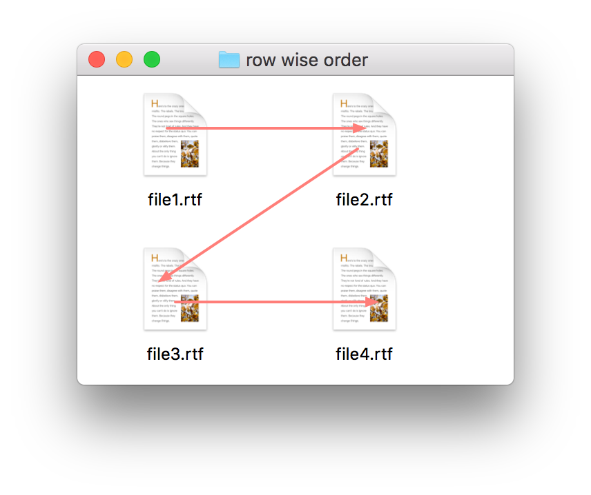

Synopsis
FileSorter はファイルの参照のリストを、Finder で表示されている順番に並び替える（ソート） AppleScript ライブラリです。このライブラリを使えば、Finder をソートの順番変更のインターフェースとして利用できるようになります。
アイコン表示、リスト表示、カラム表示に応じてソートの仕方を自動的に選択します。
ファルダの各表示形式に対して以下のような順番でソートを行います。
アイコン表示
「常に次の項目で並び替える」が設定されている場合は、設定されている属性でファイルの参照はソートされます。
それ以外の場合はファイルの位置でソートされます。縦方向を基準（column wise）に、もしくは横方向を基準（row wise）にでソートするかカスタマイズすることができます(see is_rowwise_for_iconview)。デフォルトでは、ラベルの位置によって決定されます。ラベルの位置が下の時は、行方向。名前が右にある時は、列方向になります。

行方向

列方向
リスト表示/Cover Flow表示
ファイルの並び順に従ってソートします。たとえば修正日で並び替えられているのならば、修正日でソートされます。
カラム表示
名前の順番（昇順）でソートされます。